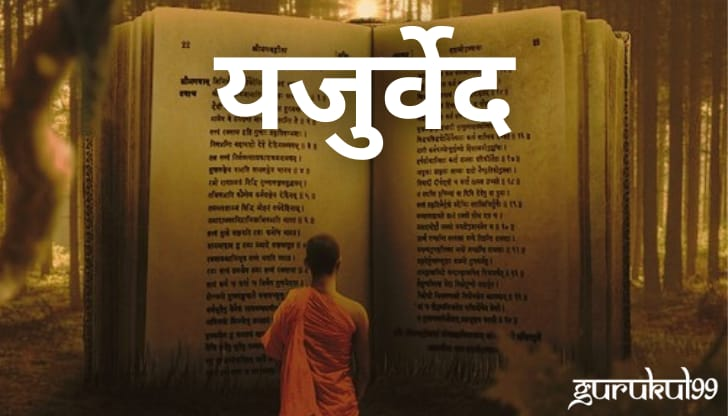

- यजुर्वेद या शब्दाचा अर्थ (संस्कृत:- यजुस् + वेदः = यजुर्वेदः) असा होतो.
- हा हिंदुंच्या चार वेदांपैकी दुसरा वेद आहे.
- वेदांची रचना ख्रिस्तपूर्व ६००० पूर्वीच्या काळात झाली, असा एक मतप्रवाह आहे.
- या विषयी विविध अभ्यासकात मतमतांतरे प्रचलित आहेत.
- यजुर्वेद संहितेत वैदिक काळातील यज्ञात आहुती देण्यासाठी वापरण्यात येणाऱ्या मंत्रांचा समावेश आहे.
- त्यांच्या प्रस्तुतीकरण व वापराच्या पद्धतीत ब्राह्मणग्रंथ व श्रौतसूत्रे यांनी मोलाची भर घातली.
- यज्ञसंस्थेचा तपशीलवार विचार या संहितेने मांडला आहे.धनुर्वेद हा यजुर्वेदाचा उपवेद मानला जातो.
- हा यजुर्वेद ब्रह्मदेवाने लिहीला आहे.ब्रह्मदेव निद्रेत असताना त्यांच्या तोंडातून तीन वेद निघाले.